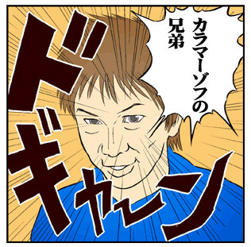

Your browser doesn't support the features required by impress.js, so you are presented with a simplified version of this presentation.
For the best experience please use the latest Chrome or Safari browser. Firefox 10 (to be released soon) will also handle it.
naoya「おれ全職業Lv50になったわ」

ということでドラクエ10の話です
知り合いとフレになると捗る
- 酒場システムがある
- プレイしてない時に酒場に登録してると、他の人が自分のキャラを連れてPT組める
- フレだと格安で借りられる
エスポつよい
ボス戦の時に平田のなおやさんを借りて連れてったら、みんな死んでるのに一人でボスたおしてた。AIなのに！
平田ってなに?
- ひらめきの指輪を装備している
- タイガークローを覚えてる、武闘家か盗賊
- 攻撃力を高めている
- MPもいっぱいある
順番に説明します
ひらめきの指輪とは
- ちいさなメダルを30枚と交換
- 1戦闘後に1-3MP自動回復
- ちいさなメダルはLv40のクエやると世界中回って30枚とれるようになる
タイガークローとは
- ツメ装備をしている時に覚えられるスキル
- MP3で1.5倍の攻撃を3回連続で行える
- 格下のモンスターを乱獲してレベルを上げると経験値が時給で2万越えるので効率よい
スキルとは?
- Lv10を越えたらレベルが上がるたびかつ3の倍数レベル以外の時にスキルポイントが貰える
- 現状Lv50までで、一つの職業で107もらえる
- タイガークローはツメ58スキル
攻撃力を上げる
- 武器で攻撃力あがる
- 練金という武器に付与効果を付けられて、すっごい運がいいとデフォルトの攻撃力からさらに+18くらい攻撃力ふやせる
- あとはスキルでも増えるツメスキルに振るとツメ装備時に+15できる
- そのほか職業スキルでパッシブとる
MP ふやすには?
攻撃力と同じ、装備はあたまの防具を被ると+39とかできるしパッシブでもできる
パッシブ?
職業スキルは，該当職業専用の技以外は他の職業でも効果が付けれるので、強い平田を作るには
- 戦士で攻撃力+10防御+20HP+30
- 武闘家で攻撃力+10HP+40
- ツメは盗賊で攻撃力+15にする
- MP は魔法使い僧侶全部で+40にする
まとめると
装備とパッシブを頑張ると攻撃力+50MP+79とかのスペックになる
魔法使いを支える技術は?
パッシブ重要装備重要
平田さんと同じでパッシブを取ると、普通はHPすくなくて死にやすい魔法使いでも耐久力あがって死ににくくなるので遠慮なく「今のはメラゾーマではないメラだ」が出来るようになる
新職業追加
来月頭のバージョンアップで新職業でるのでよりパッシブが増えるし、レベル上限があがったらきっとスキル増やせるので鍛錬いっぱいできる。
naoya さんも全部Lv50にしたって行ってられない状況。
おわり
僕と一緒に冒険してくれるエンジニアリングの魔法使いを募集しています！
時間があれば、去年のYAPCで尺足りなくて端折ったはなしします。